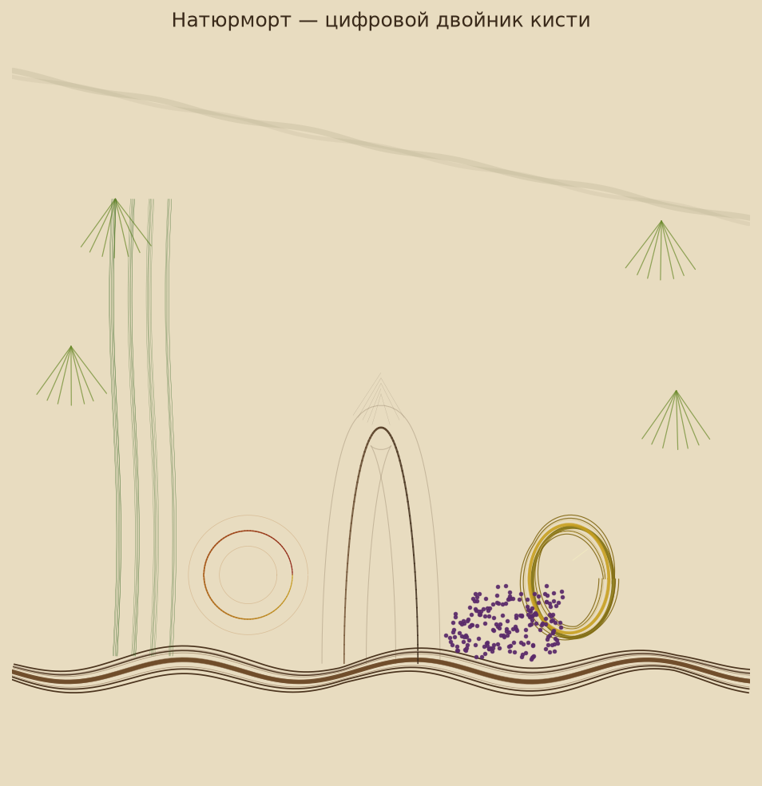
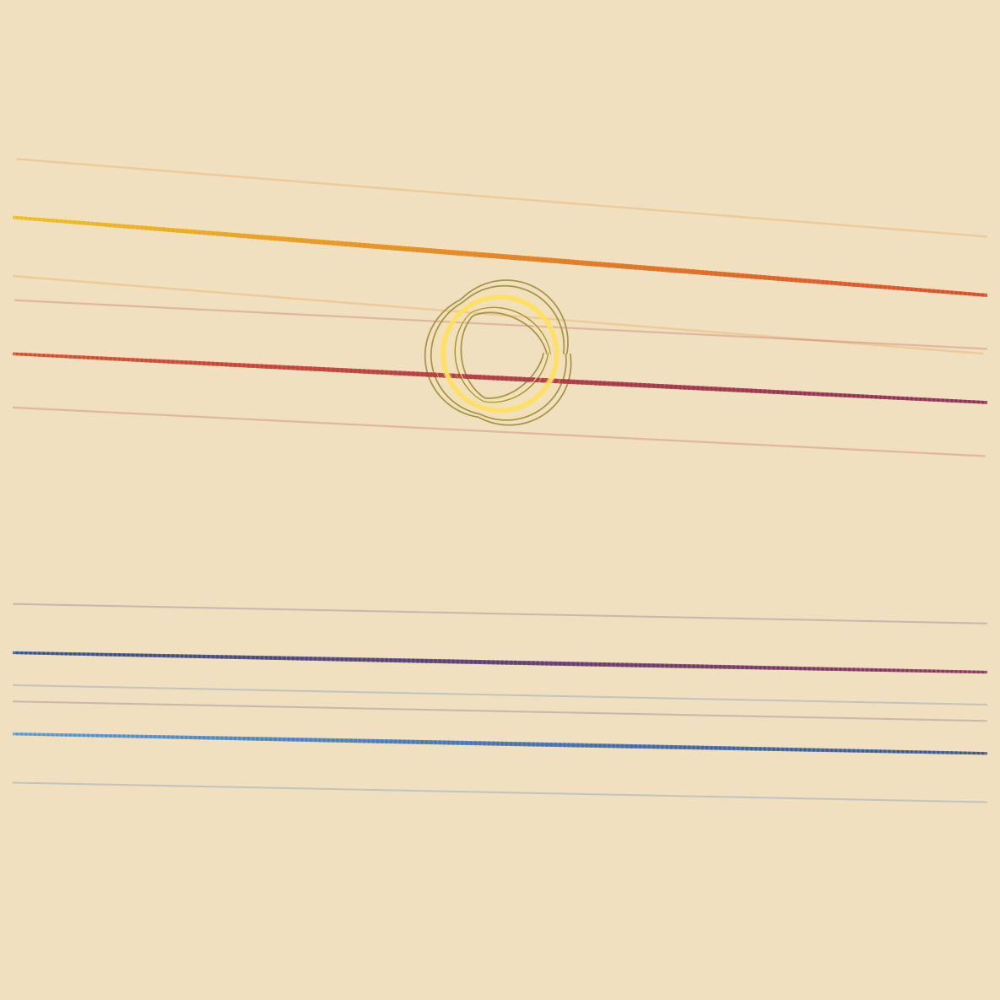
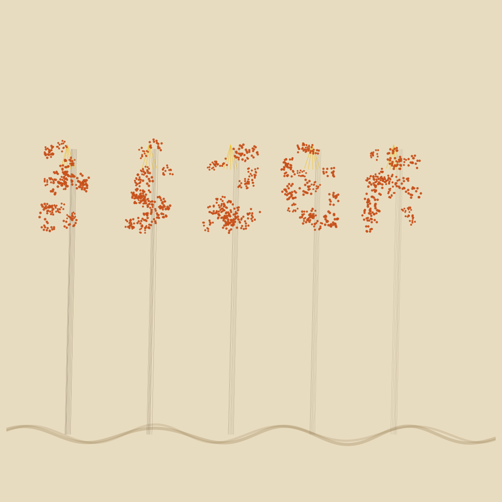
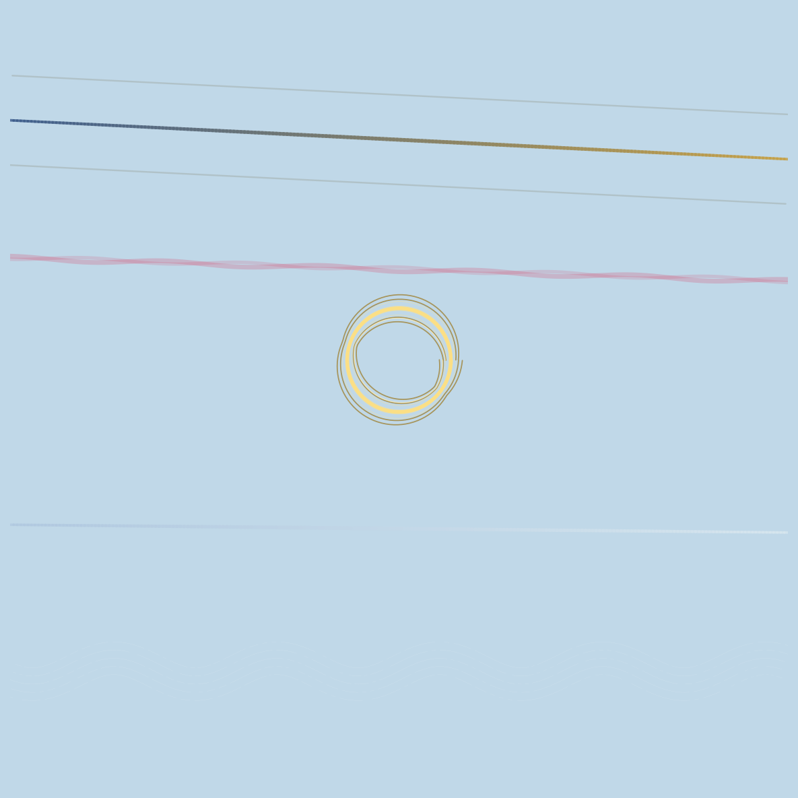
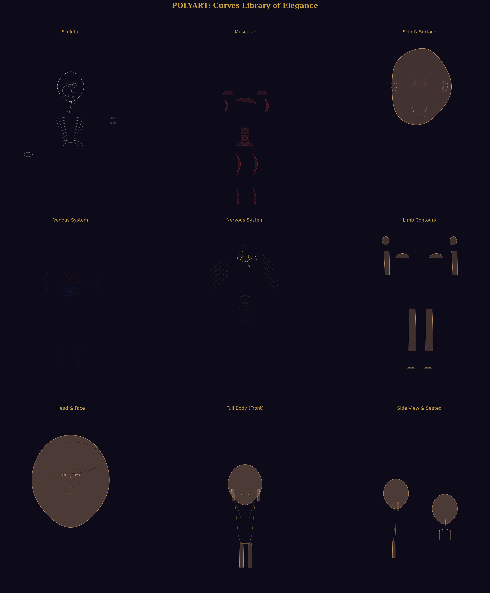
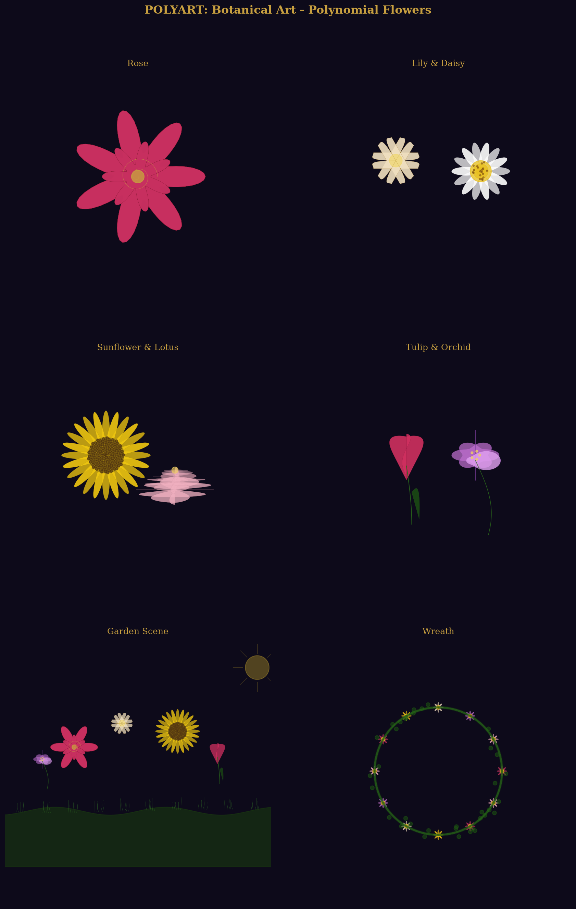
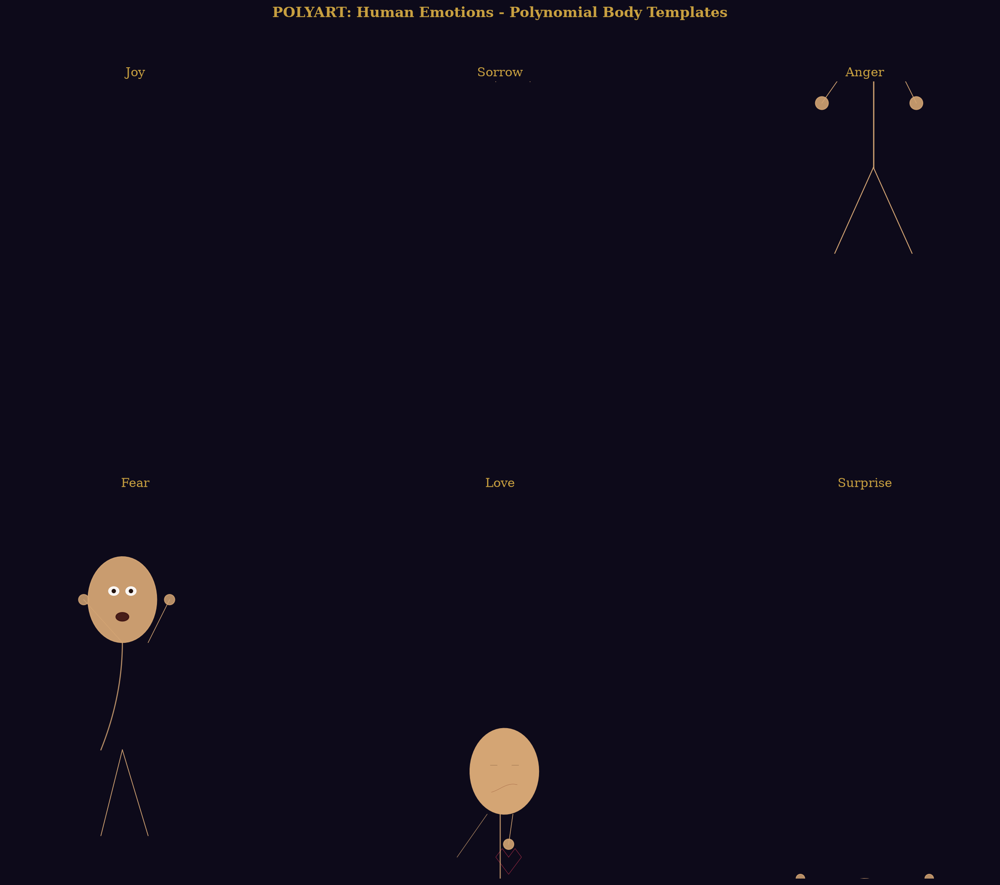
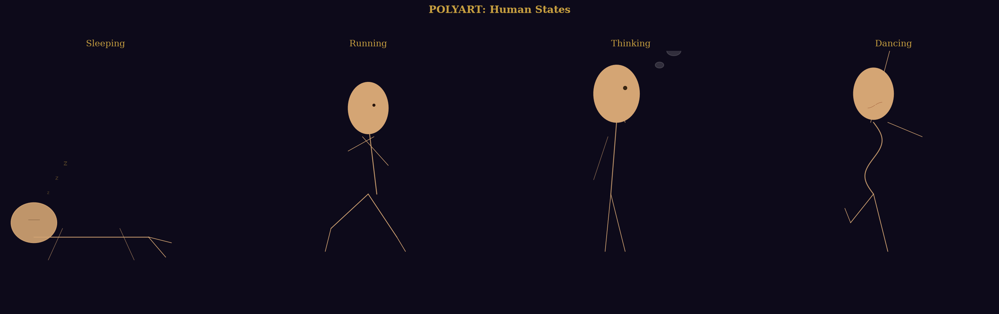
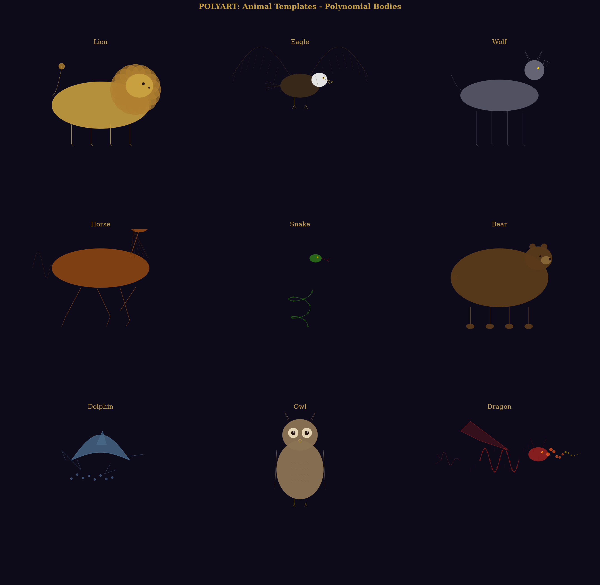

oil_brush_twin_demo.png ART
Oil brush twin (core demo)
Rarity 66/100
| edge_density | 0.009 |
| symmetry | 0.972 |
| fractal_dim | 1.975 |
| texture | 0.015 |
| color_diversity | 0.500 |
| golden_ratio | 0.660 |
| polynomial_smoothness | 0.205 |
| curvature_energy | 0.578 |

paint_demo_sunset.png ART
PainterCanvas template
Rarity 63/100
| edge_density | 0.003 |
| symmetry | 0.985 |
| fractal_dim | 1.872 |
| texture | 0.005 |
| color_diversity | 0.583 |
| golden_ratio | 0.648 |
| polynomial_smoothness | 0.190 |
| curvature_energy | 0.462 |

paint_demo_forest.png ART
PainterCanvas template
Rarity 68/100
| edge_density | 0.004 |
| symmetry | 0.981 |
| fractal_dim | 1.872 |
| texture | 0.005 |
| color_diversity | 0.125 |
| golden_ratio | 0.621 |
| polynomial_smoothness | 0.191 |
| curvature_energy | 1.000 |

paint_demo_winter.png ART
PainterCanvas template
Rarity 59/100
| edge_density | 0.001 |
| symmetry | 0.994 |
| fractal_dim | 1.873 |
| texture | 0.002 |
| color_diversity | 0.125 |
| golden_ratio | 0.595 |
| polynomial_smoothness | 0.198 |
| curvature_energy | 0.441 |

curves_library_showcase.png ART
PolyArt output
Rarity 59/100
| edge_density | 0.001 |
| symmetry | 0.986 |
| fractal_dim | 1.113 |
| texture | 0.002 |
| color_diversity | 0.542 |
| golden_ratio | 0.734 |
| polynomial_smoothness | 0.197 |
| curvature_energy | 0.663 |

flowers_showcase.png ART
PolyArt output
Rarity 63/100
| edge_density | 0.002 |
| symmetry | 0.964 |
| fractal_dim | 1.279 |
| texture | 0.004 |
| color_diversity | 1.000 |
| golden_ratio | 0.726 |
| polynomial_smoothness | 0.179 |
| curvature_energy | 0.614 |

emotions_showcase.png ART
PolyArt output
Rarity 56/100
| edge_density | 0.001 |
| symmetry | 0.990 |
| fractal_dim | 1.179 |
| texture | 0.002 |
| color_diversity | 0.458 |
| golden_ratio | 0.643 |
| polynomial_smoothness | 0.097 |
| curvature_energy | 0.614 |

states_showcase.png ART
PolyArt output
Rarity 55/100
| edge_density | 0.002 |
| symmetry | 0.978 |
| fractal_dim | 1.290 |
| texture | 0.004 |
| color_diversity | 0.458 |
| golden_ratio | 0.483 |
| polynomial_smoothness | 0.119 |
| curvature_energy | 0.625 |

animals_showcase.png ART
PolyArt output
Rarity 63/100
| edge_density | 0.001 |
| symmetry | 0.984 |
| fractal_dim | 1.236 |
| texture | 0.002 |
| color_diversity | 1.000 |
| golden_ratio | 0.664 |
| polynomial_smoothness | 0.118 |
| curvature_energy | 0.749 |

01_golden_mandala.png ART
PolyArt output
Rarity 62/100
| edge_density | 0.005 |
| symmetry | 0.977 |
| fractal_dim | 1.116 |
| texture | 0.006 |
| color_diversity | 0.458 |
| golden_ratio | 0.581 |
| polynomial_smoothness | 0.435 |
| curvature_energy | 0.814 |

05_procedural_forest.png ART
PolyArt output
Rarity 65/100
| edge_density | 0.014 |
| symmetry | 0.942 |
| fractal_dim | 1.877 |
| texture | 0.025 |
| color_diversity | 0.875 |
| golden_ratio | 0.671 |
| polynomial_smoothness | 0.329 |
| curvature_energy | 0.376 |

07_game_rpg.png ART
PolyArt output
Rarity 57/100
| edge_density | 0.009 |
| symmetry | 0.943 |
| fractal_dim | 1.267 |
| texture | 0.014 |
| color_diversity | 0.667 |
| golden_ratio | 0.710 |
| polynomial_smoothness | 0.234 |
| curvature_energy | 0.397 |

12_polyart_lang.png ART
Meta-language demo
Rarity 63/100
| edge_density | 0.003 |
| symmetry | 0.982 |
| fractal_dim | 1.155 |
| texture | 0.004 |
| color_diversity | 0.750 |
| golden_ratio | 0.750 |
| polynomial_smoothness | 0.403 |
| curvature_energy | 0.603 |